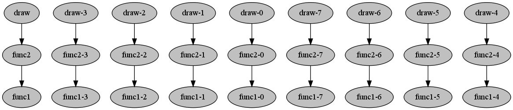

Graph¶
There is a command “graph” that can produce a graphical depiction of the computation. (to use this feature, you should have installed graphviz and the gvgen library)
If you run:
$ compmake my_program diagram
before running make you will see the following:
The color grey means that the job has not started. After running make, the output will be:

Here, green means that the job is done.
After we run

Here, green means that the job is done.
The computation gra